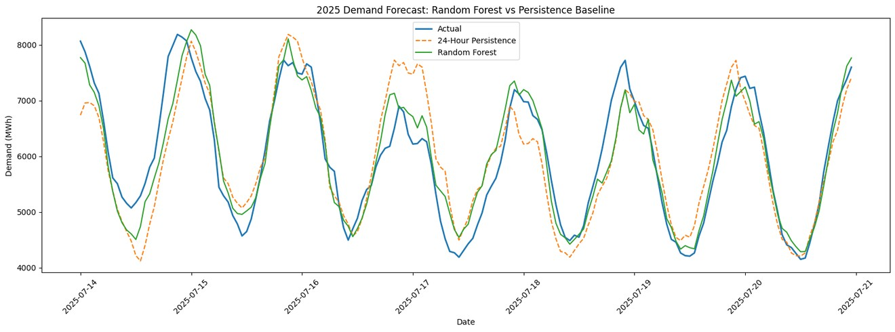
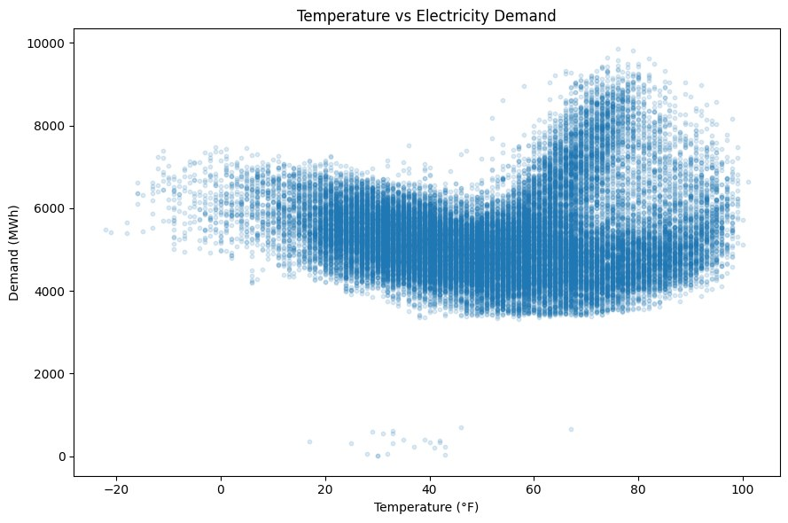
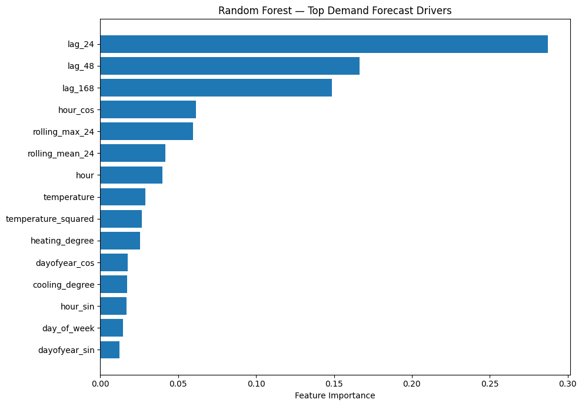
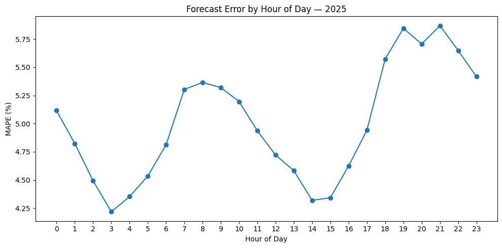

24-hour-ahead load forecasting and peak-demand analysis
An end-to-end forecasting workflow for the Public Service Company of Colorado balancing authority, built on six years of EIA hourly demand and NOAA weather data and delivered as an operational Power BI report.
An electric utility balances supply and demand continuously. Short-term load forecasts drive generation planning, resource scheduling, capacity management and peak preparation, and the cost of error runs in both directions: under-forecast the peak and reliability is at risk, over-forecast it and the utility pays for capacity it never uses.
The question was specific. How much electricity should the PSCO system expect for each hour of the following day, and when is it most likely to peak?
The operational default for this kind of forecast is persistence: use demand from the same hour yesterday. It is not a strawman. Electricity demand is highly self-similar day to day, and over 2025 persistence achieved 6.63% MAPE, with mean absolute error of 344.97 MWh. Any replacement has to beat that to be worth operating, so persistence was kept as the benchmark from the first day of the project to the last.
A 24-hour-ahead hourly forecast that beats persistence measurably, flags high-demand periods, quantifies its own error rather than reporting a single average, explains what drives demand, and reaches planners as something they can interrogate.
Two separate causes were driving forecast error. Only one of them is about models.
Persistence propagates history and nothing else. It carries yesterday's weather, yesterday's day-of-week and yesterday's shape forward unchanged, so every time conditions move, the forecast is wrong by exactly the size of that move, one day late.

Demand also responds to temperature nonlinearly and in both directions, rising for heating at one extreme and cooling at the other. Training-window temperatures ran from about -22℉ to 101℉. No amount of historical propagation captures that, because the relationship is to today's weather, not yesterday's demand.

Demand and weather arrive from different systems with different time conventions, and in this problem the usual failure is not a weak algorithm. It is a quietly corrupted dataset that produces a confident, wrong model:
These are root causes of forecast failure in the same sense as the first one, and they were addressed first.
Lags built by timestamp lookup, not row shifting, so real gaps cannot misalign the series. Rolling features anchored to the forecast origin, so a 24-hour-ahead prediction only ever sees information available 24 hours earlier. Validation run chronologically: train on 2020 to 2023, validate on 2024, hold 2025 back untouched. No random split, because shuffling a time series lets future observations inform past predictions.
| 2024 validation | MAPE | MAE | RMSE |
|---|---|---|---|
| Random Forest | 5.04% | 260.06 | 342.13 |
| LightGBM | 5.05% | 260.58 | 343.07 |
| XGBoost | 5.05% | 261.21 | 343.93 |
| Linear Regression | 5.70% | 295.78 | 391.12 |
| Persistence baseline | 6.69% | 347.28 | 458.57 |
The three tree ensembles landed within 0.01 percentage points of each other. That near-tie is itself a finding: the gain came from the engineered features, not the choice of algorithm. Random Forest was selected on validation and retrained on everything through 2024.
| 2025 holdout | Random Forest | Persistence baseline |
|---|---|---|
| MAPE | 5.00% | 6.63% |
| MAE | 259.50 MWh | 344.97 MWh |
| RMSE | 338.78 MWh | 458.50 MWh |
A 24.54% relative reduction in MAPE against the operating benchmark. Validation performance held on the holdout year rather than degrading, which is the evidence that the leakage controls worked.


Peak prediction is a separate problem from average accuracy. A model can post a strong overall MAPE while still underestimating extreme demand, and for a utility the peak drives capacity decisions. Peak magnitude and peak timing are therefore scored as their own measures rather than folded into an average.
Results were built into a three-page Power BI report so the finding survives past the analysis:
One limitation is structural and worth stating plainly: the backtest uses observed historical weather. A production system would run on weather forecasts available at prediction time, which carry their own error, so these figures are an upper bound on what the same features deliver live. Utility-specific inputs that would likely improve it further were outside public data: customer-class demand, distributed solar, outages, demand-response events, pricing and industrial activity.
Next countermeasures, in the order I would take them: